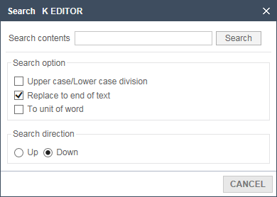
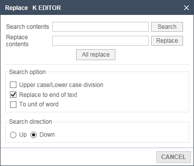

Cancel the edited work or run back to the original task as canceled.
Cancel the most recent operation and return to its previous state.
This most recent work by one step each time you choose to cancel.
Open the document if you have not any action or progress after all the work,
It can not be a turning back after returning.
Had to cancel the edit operation, run the reset again.
Most recently, the operation is stepping into reverting.
If you no longer revert to undo, action does happen.
Block the selected part is copied to the Clipboard, and also remains in the document.
The copied portion is stored in the Clipboard so you can paste it elsewhere.
If you copy the new contents of the Clipboard, Previous archived information is gone.
As a selected portion of a block away, it is copied to the clipboard.
Cut portions are stored in the clipboard, it can be pasted elsewhere.
If you copy the new contents to the clipboard, the content that has been saved in the past, disappears
Saved content to the Clipboard and insert the cursor in the location.
It must be to be copied or cut earlier in order to be attached.
No matter what cursor position in all the contents of the document currently being edited can be selected by the block.
In this State, you can copy, cut, paste, erase of edit tasks.
Find the symbol in the current working Editor.

01Enter data to find Editor.
02Select a search option.
03Select the search direction.
04Click the Browse button to locate the line.
Current working text is changed to replace the words found in the editor of.

01Enter what you are searching in the Editor.
02Enter what you change.
03Select the searching option. (Basic selection: return to the end of the document)
04Select the search direction (Basic selection: Below)
05When you click the Searching Button, Find the string.
06If you click the Replace button, replaces the line, to replace the found string.
07When you click All to replace, Switch to the content to change the contents of finding the entire editor.